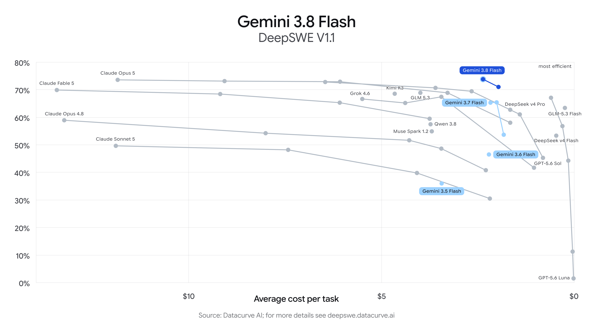

news / 新闻
- openclaw2.0发布 但是无人在意...: 龙虾之父，困在了龙虾里
- GPT-6 Astra发布
- 号称真正的AGI来了
- 看测评文章 好像是在3D生成以及computeruse上有了很大的突破, 可以操作电脑上的软件干活了? 暂时观望中...
- 但也有声音指出, 现有的模型已经很能打了: https://mp.weixin.qq.com/s/gg2u2oMKiI8YUN-jTZV8kw -- 希望这次也是一样的剧本, OA的模型领先世界, 几个月后被国产模型赶上来
- fable5.1发布: 好像风头都被Astra抢走了... 😆
- Gemini3.8-flash发布
- 所以现在flash是三周一版的节奏了么? 你别管好不好 你就说迭代的快不快吧! 🐶
- 看benchmark超过了opus5? 但这周工作中有被3.8气到 一个简单的colab来来回回搞了好几遍 血压都上来了! 😡

gems / 分享
- 软件分享: herdr
- tmux的现代替代品, 非常好用的终端复用器! 这周在工作电脑上上手安装以后, 配合antigravity CLI 感觉生产力提高很多!
- 终于可以直接鼠标点击拖动操作了, 而且鼠标上翻就可以回看以前的内容, 以前tmux总要有个快捷键才可以回看非常不方便
- 还可以新建好多个workspace, 每个workspace有多个tab, 每个tab可以多个pane, 切换也很方便
- 有专门的agent视图, 可以看到所有agent的运行情况(哪些闲置, 哪些在运行, 哪些需要输入)
- 好像"herdr"是牧羊人的意思, 比喻的就是程序员管理N个agent, 很像牧羊人放一群羊的感觉...
-
稍微复杂一点的用法 是让一个agent来控制其他的herdr tabs (只需要告诉agent读一下
herdr skill的输出就好了)- 比如我会建立一个"agent-playground"的workspace, 里面的tab/pane都是agent在跑命令.
-
UP主分享: 程序员老王
- 好像是Google的同事, 风格是吐字清楚, 慢条斯理, 视频浅显易懂, 容易follow
- 最早发现他 是有一系列介绍各种实用工具的视频(fish/uv/fzf/etc.)
-
最近他开始介绍AI相关的内容, 最新一期介绍KV cache的视频还不错
-
网站分享: https://www.canirun.ai/
- 可以检测你现在的硬件设备 告诉你什么模型可以在本地跑起来
- 最近在找本地模型发现了这个网站 不过好像我的16G macmini也没啥好挑的, 只能跑Qwen3.5-9B或者Gemma4(用omlx)
gmail邮箱名tip
如果你有一个gmail邮箱 (例如foo@gmail.com), 那么以下两种都是指向同一个邮箱:
- foo@googlemail.com
- foo+bar@gmail.com -- 也就是说可以在"+"后面加任何东西, 都指向原来的邮箱
这样的好处就是, 可以同一个网站注册不同的邮箱, 但其实只在一个地方收邮件.
而且这样还方便整理, 可以通过收件人的地址判断是谁发来的, 或者添加自动过滤规则. ✅️
misc / 杂记
周末遛娃
- Zug 国际日 / Fest der Nationen
- 三年一次的活动, 各个国家上台表演特色节目, 可以看到好多民族特色服装和舞蹈, 台下吃吃喝喝非常chill
- 有中国功夫和小朋友的中文儿歌表演
- 还有小朋友的手工活动, 不知不觉一天就过去了
运动
- 这周没有瑜伽课, 周五完全没有动, 感觉身体很僵硬...
- 两次力量训练:
- 周一: box squat 90kg 5reps x 4
- 周三:
- 卧推: 5reps x (60kg-65kg-70kg-68kg)
- 感觉70kg还是有点勉强, 以后可以在68kg推, 不做ego lifting
- 硬拉: 85kg 5reps x 4
- 结束后还划船机2km(8分钟多)
- 自己探索了一个不用换衣服,不出汗的 不到20分钟的锻炼计划, 带着耳机就可以做：
- 6分钟悬吊挑战
- 用8min腹部锻炼的音频, 交替做90秒靠墙静蹲和平板支撑各两组
- 灵感来自: 最无聊的三个动作，撑起你全部的训练
开源项目贡献
有了AI的加持, 现在我感觉我(加AI)强的可怕, 不管啥project我都敢掺和一下了.
- md-wechat PR#7
- 给神烦老狗的公众号排版项目加了我认为好看点的主题
- 比较搞的是看到自己上电视了 -- 在老狗测评Gemini3.8flash的视频里 他用3.8审阅并merge了我这个PR
- rectangle
- 之前提交的 PR#1824已经被merge到了主仓库🎉 -- 效果是更方便的1/4分屏
- 我还提交了一个新的PR -- 效果是两次全屏时返回之前的位置和大小(类似两次双击的行为 更符合直觉), 也收到了owner的反馈
- 从仓库作者(
rxhanson@)的回复来看, 在AI code满天飞的时代, 似乎他还在坚持手搓, 令人钦佩!👍 - memos PR#6273
- 这个是我每天都在用的笔记工具(类似flomo)
- 之前就感觉这个行为有点不爽, 某天晚上派GPT-5.6-luna去修(来自github送的copilot), 感觉luna也很能打啊其实
- paseo PR#4397
- Paseo就是我现在每天用的AI工具 超级推荐, 很奇怪为啥没怎么看到有人提到它
- 这个PR就是双击重命名的逻辑(来自antigravity)搬到Paseo上面, 用到了GPT-5.6-luna和Gemini-flash-3.8
- 与此同时我也想把工作中每天用的antigravity改的更像Paseo, 让gemini跑了一个通宵以后似乎有戏, 就是不知道CL好不好发...
Disqus 留言